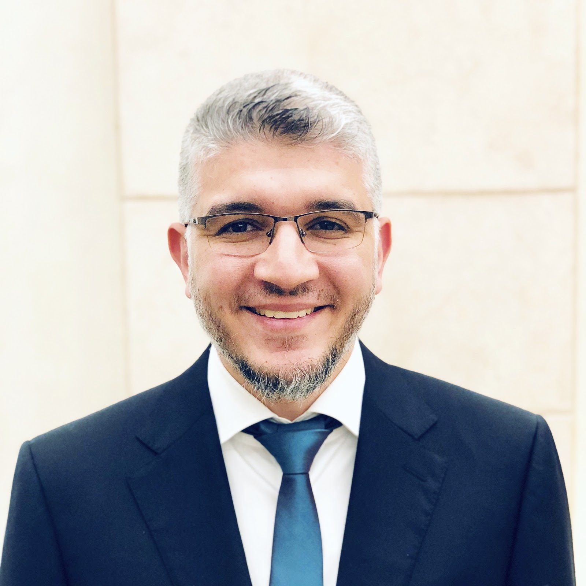
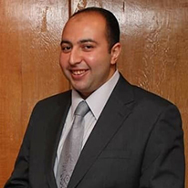

Improving the level of performance and competitiveness of the Institute to be able to continuously develop and then supply the labor market with graduates with a high level of scientific and practical competence, committed to professional ethics and able to compete that achieves the trust and satisfaction of society with the Institute’s graduates.
Spreading and activating quality, completing the components of the internal quality system, and paying attention to improving and upgrading the educational service by setting specific standards that are followed, reviewed, and evaluated, which in turn identify the problems facing the educational process, working to find the most appropriate solutions to them, applying continuous improvement of performance, and gaining the trust and satisfaction of stakeholders with the aim of achieving comprehensive quality and access. For accreditation.
بتم الاعتماد علي الاليات التاليه :
The program aims to graduate generations of engineers in the field of electronics and communications engineering who have the spirit of innovation, technological creativity and the ability to compete in the labor market by applying the latest teaching and learning systems that keep pace with scientific and research progress in line with the developments of the times to achieve sustainable development to contribute to community service and environmental development. And entrepreneurship.
1- Providing future engineers with theoretical knowledge and appropriate technical skills in electronics and communications engineering to design, operate and maintain a system/component and respond to professional market requirements.
2-Enable students to use appropriate engineering techniques, skills, and tools to design and conduct experiments using appropriate electronic, communications, control, and information engineering tools, as well as analyze and interpret data to identify, formulate, and solve complex and open-ended engineering problems.
3- Enabling graduates to meet the requirements and skills of the century in electronics and communications systems.
4- Providing students with the necessary skills to communicate and work effectively within multidisciplinary teams whose engineering solutions affect society and the environment.
5- Providing students with the ability to identify electronics and communications requirements for different business activities at both operational directions and decision-making levels. And the skills necessary to communicate effectively, collaborate across disciplines, and enable graduates to assume professional responsibility and take into account societal values and professional ethics.
6-Providing modern training programs that allow graduates to manage projects related to electronics and communications systems in a variety of applications, purchasing and installing hardware, designing software, data processing, and system operations. It also guides graduates to engage in lifelong learning activities and specialized professional development, and qualifies graduates to acquire initiative, leadership, and entrepreneurship skills.
7- Access to the most successful technological and electronic formulas in providing targeted knowledge and scientific research and distributing it to achieve sustainability to keep pace with the strategic plan of the Ministry of Higher Education.
Electronics and Communication Engineering Program Goals PDF
The Organizational Structure Of The Programn PDF
Teaching, Learning And Assessment Strategy PDF
Distance Teaching, Learning And Assessment Strategy PDF
Providing modern technology that is compatible with the actual needs of the local and regional labor market to achieve excellence and leadership at the regional and international levels.
The Department of Industrial Engineering is committed to preparing a qualified graduate for distinguished career paths in the field of industrial engineering, equipped with the competencies and skills that qualify him to compete in local, regional labor markets. He also has the ability to innovate, entrepreneurship, and produce distinguished international scientific research that keeps pace with modern scientific and technological developments within a framework of societal values and responsibility.
The Organizational Structure Of The Programn PDF
Teaching, Learning And Assessment Strategy PDF
Distance Teaching, Learning And Assessment Strategy PDF

Chairman of Board of Directors

Dean of The Institute

Director of the Quality Assurance Unit

A representative of the Department of Electronics and Communications Engineering

A representative of the Computer Engineering Department

A representative of the Mechatronics Engineering Department

A representative of the Industrial Engineering Department

A representative of the Basic Sciences Department

Representatives of the Assisting Staff
" By himself "
Unit administrative officer and secretarial work
The unit's organizational officerة
The unit's organizational officer


 Arabic
Arabic